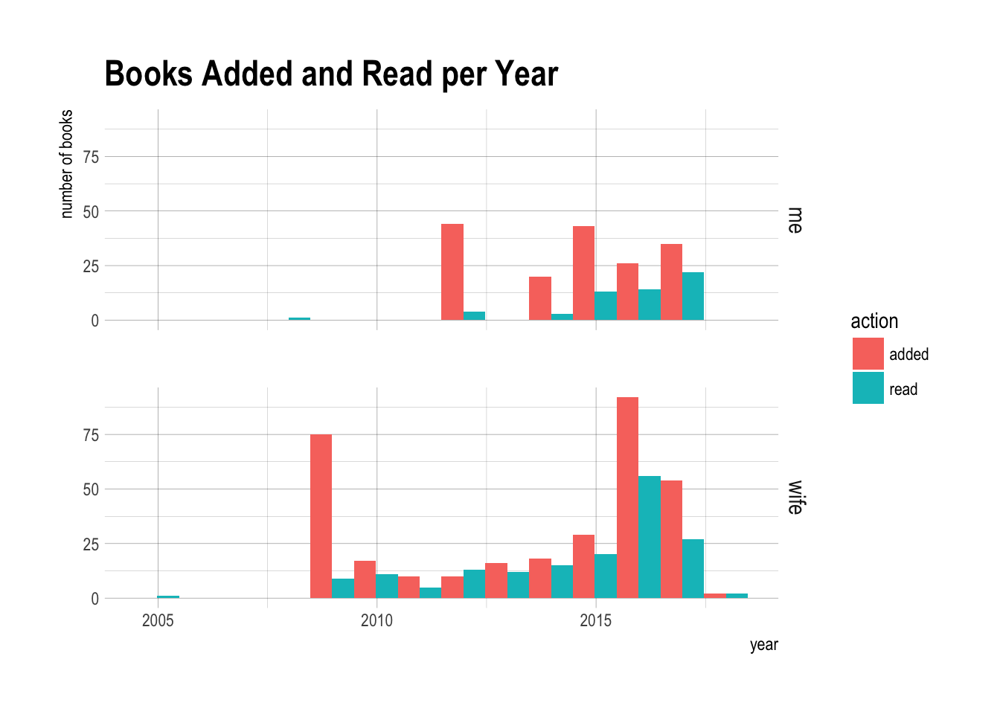
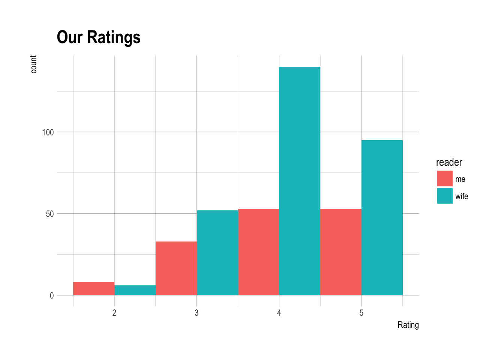
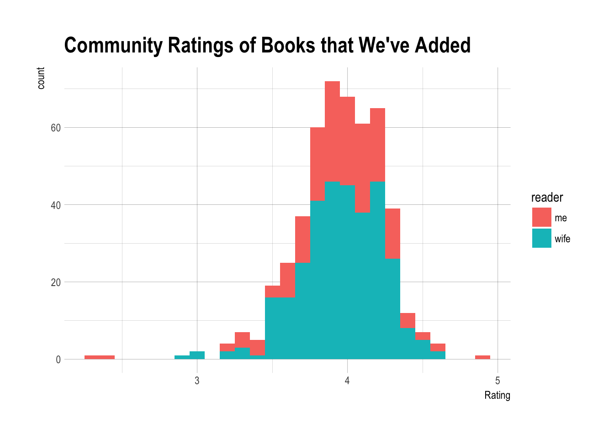
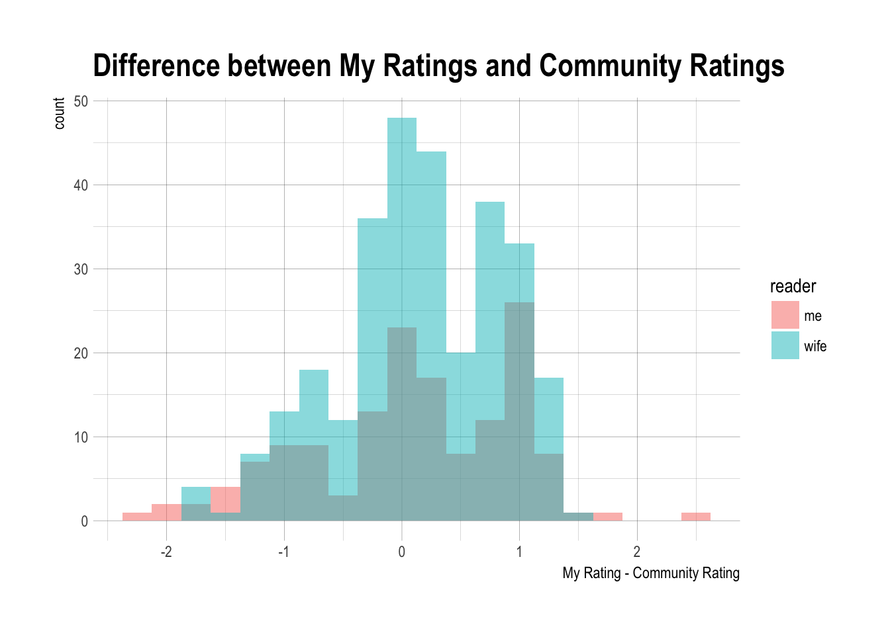
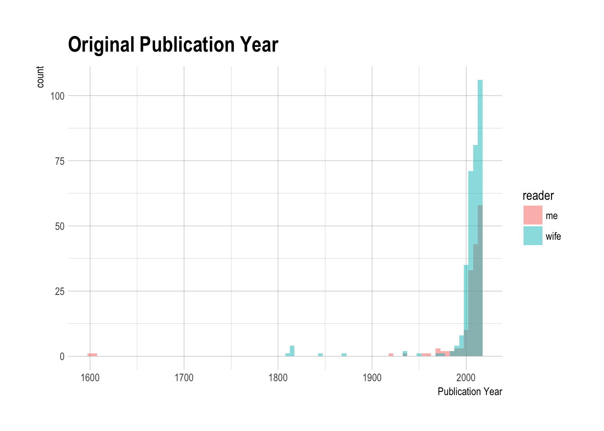
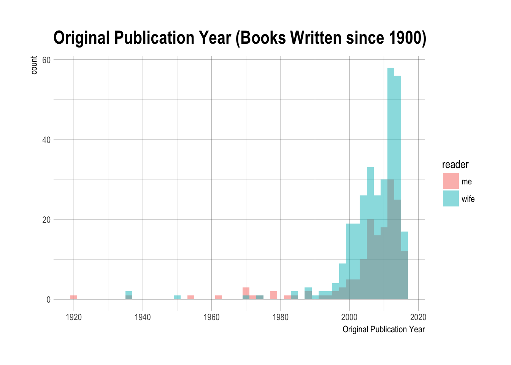
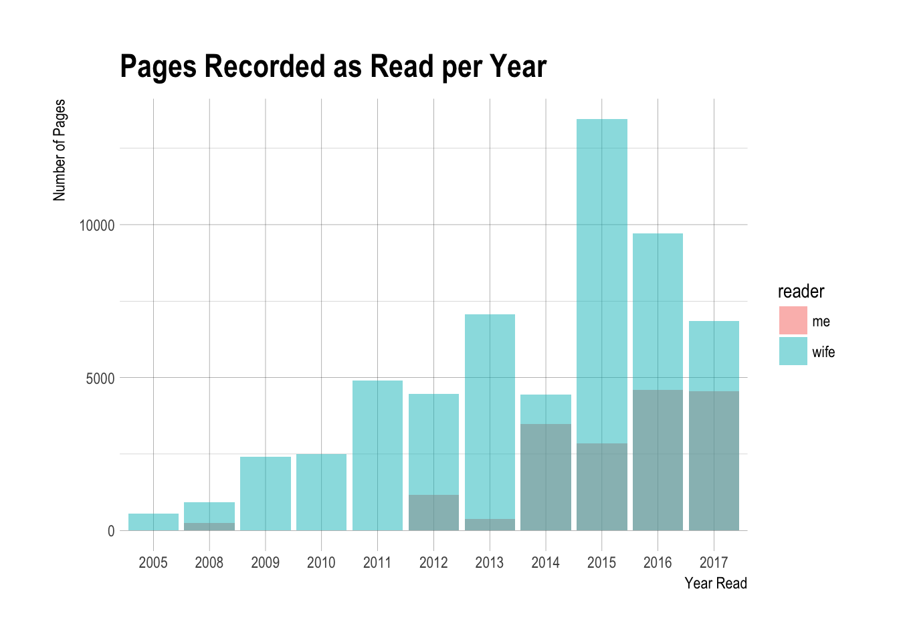
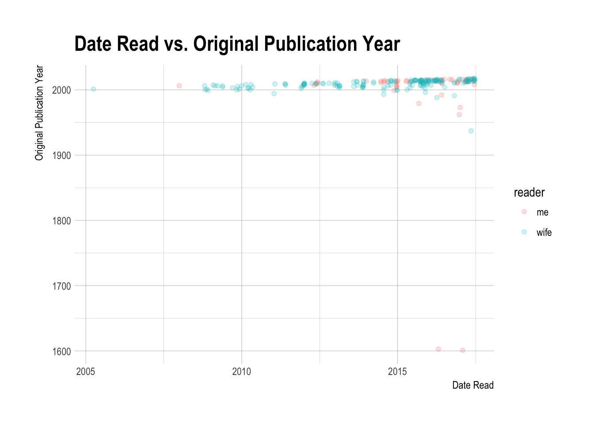
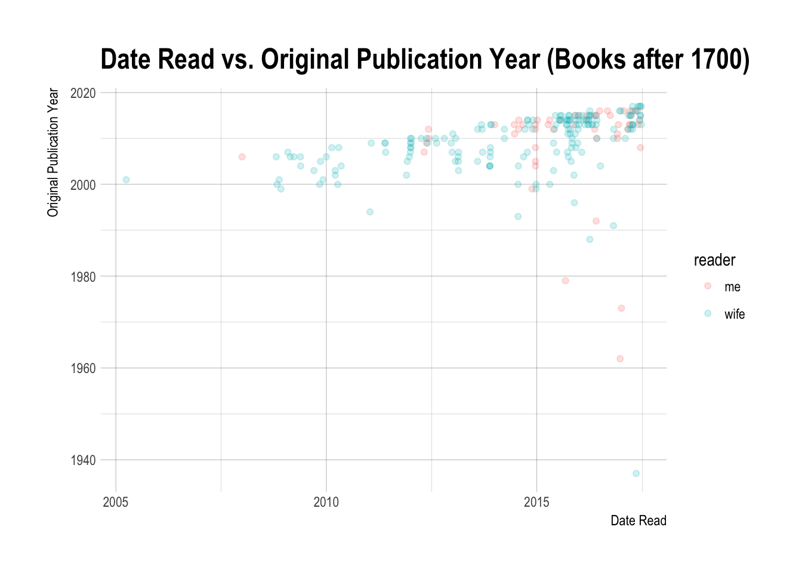

I just finished my 2017 Reading Challenge on Goodreads. My goal was to read 15 books this year. Poking around the site I discovered that I could export my data. I decided to have a look to see what my reading habits looked like, and since I was doing this for me, I decided to look at my wife’s data too.
Dataset
library(dplyr)##
## Attaching package: 'dplyr'## The following objects are masked from 'package:stats':
##
## filter, lag## The following objects are masked from 'package:base':
##
## intersect, setdiff, setequal, unionlibrary(tidyr)
library(ggplot2)
library(lubridate)##
## Attaching package: 'lubridate'## The following object is masked from 'package:base':
##
## datelibrary(hrbrthemes)
books <- read.csv("../datasets/goodreads.csv", colClasses = "character")
books_wife <- read.csv("../datasets/goodreads_wife.csv", colClasses = "character")
books <- tbl_df(books)
books_wife <- tbl_df(books_wife)books <- mutate(books, reader = "me")
books_wife <- mutate(books_wife, reader = "wife")
books <- full_join(books, books_wife)## Joining, by = c("Book.Id", "Title", "Author", "Author.l.f", "Additional.Authors", "ISBN", "ISBN13", "My.Rating", "Average.Rating", "Publisher", "Binding", "Number.of.Pages", "Year.Published", "Original.Publication.Year", "Date.Read", "Date.Added", "Bookshelves", "Bookshelves.with.positions", "Exclusive.Shelf", "My.Review", "Spoiler", "Private.Notes", "Read.Count", "Recommended.For", "Recommended.By", "Owned.Copies", "Original.Purchase.Date", "Original.Purchase.Location", "Condition", "Condition.Description", "BCID", "reader")The data were arranged into variables like Author and Title but also Pages, Publication Date, Date Read, My Rating, Average Rating, etc.
str(books)## Classes 'tbl_df', 'tbl' and 'data.frame': 491 obs. of 32 variables:
## $ Book.Id : chr "3852882" "31920777" "30653783" "840" ...
## $ Title : chr "Your Hate Mail Will Be Graded: A Decade of Whatever, 1998-2008" "American Kingpin: The Epic Hunt for the Criminal Mastermind Behind the Silk Road" "Smart Baseball: The Story Behind the Old Stats That Are Ruining the Game, the New Ones That Are Running It, and"| __truncated__ "The Design of Everyday Things" ...
## $ Author : chr "John Scalzi" "Nick Bilton" "Keith Law" "Donald A. Norman" ...
## $ Author.l.f : chr "Scalzi, John" "Bilton, Nick" "Law, Keith" "Norman, Donald A." ...
## $ Additional.Authors : chr "" "" "Tbd" "" ...
## $ ISBN : chr "=\"1596062118\"" "=\"1591848148\"" "=\"0062490222\"" "=\"0465067107\"" ...
## $ ISBN13 : chr "=\"9781596062115\"" "=\"9781591848141\"" "=\"9780062490223\"" "=\"9780465067107\"" ...
## $ My.Rating : chr "4" "0" "0" "0" ...
## $ Average.Rating : chr "3.67" "4.36" "4.10" "4.18" ...
## $ Publisher : chr "Subterranean" "Portfolio" "Harper Collins" "Basic Books" ...
## $ Binding : chr "Hardcover" "Hardcover" "Hardcover" "Paperback" ...
## $ Number.of.Pages : chr "368" "352" "304" "240" ...
## $ Year.Published : chr "2008" "2017" "2017" "2002" ...
## $ Original.Publication.Year : chr "2008" "2017" "2017" "1988" ...
## $ Date.Read : chr "2017/06/17" "" "" "" ...
## $ Date.Added : chr "2017/06/17" "2017/06/16" "2017/06/10" "2017/06/10" ...
## $ Bookshelves : chr "" "to-read" "to-read" "to-read" ...
## $ Bookshelves.with.positions: chr "" "to-read (#16)" "to-read (#15)" "to-read (#14)" ...
## $ Exclusive.Shelf : chr "read" "to-read" "to-read" "to-read" ...
## $ My.Review : chr "" "" "" "" ...
## $ Spoiler : chr "" "" "" "" ...
## $ Private.Notes : chr "" "" "" "" ...
## $ Read.Count : chr "1" "0" "0" "0" ...
## $ Recommended.For : chr "" "" "" "" ...
## $ Recommended.By : chr "" "" "" "" ...
## $ Owned.Copies : chr "0" "0" "0" "0" ...
## $ Original.Purchase.Date : chr "" "" "" "" ...
## $ Original.Purchase.Location: chr "" "" "" "" ...
## $ Condition : chr "" "" "" "" ...
## $ Condition.Description : chr "" "" "" "" ...
## $ BCID : chr "" "" "" "" ...
## $ reader : chr "me" "me" "me" "me" ...Data Cleaning
Some boring data cleaning code…
# Factor author names
books$Author <- factor(books$Author)
# Factor bookshelves
books$Exclusive.Shelf <- factor(books$Exclusive.Shelf)
# Numeric ratings
books$My.Rating <- as.numeric(books$My.Rating)
books$Average.Rating <- as.numeric(books$Average.Rating)
# Number of Pages
books$Number.of.Pages <- as.integer(books$Number.of.Pages)
# Years
books$Year.Published <- as.integer(books$Year.Published)
books$Original.Publication.Year <- as.integer(books$Original.Publication.Year)
# Dates
books$Date.Added <- ymd(books$Date.Added)
books$Date.Read <- ymd(books$Date.Read)Books Read vs Added
I’ve recorded 150 books as being read, and the wife has recorded 302 books as being read.
books %>% select(Exclusive.Shelf, reader) %>% group_by(reader, Exclusive.Shelf) %>%
summarize(n = length(Exclusive.Shelf))## Source: local data frame [6 x 3]
## Groups: reader [?]
##
## reader Exclusive.Shelf n
## <chr> <fctr> <int>
## 1 me currently-reading 2
## 2 me read 150
## 3 me to-read 16
## 4 wife currently-reading 1
## 5 wife read 302
## 6 wife to-read 20Dates Added and Read
I have only been adding to this list off and on since joining Goodreads. I plotted below the distribution of when I added and read books.
tmp1 <- books %>% select(Book.Id, Date.Added, reader) %>% mutate(action = "added") %>% rename(year = Date.Added)
tmp2 <- books %>% select(Book.Id, Date.Read, reader) %>% mutate(action = "read") %>% rename(year = Date.Read)
bind_rows(tmp1, tmp2) %>% filter(!is.na(year)) %>%
ggplot(aes(x = year, fill = action)) +
geom_histogram(binwidth = 365, position=position_dodge()) +
ggtitle("Books Added and Read per Year") +
ylab("number of books") +
xlab("year") +
theme_ipsum() +
facet_grid(reader ~ .)
It looks like I signed up for Goodreads in 2012 and started adding books to my list of read books. If I couldn’t remember when I read the book, I left the date read field blank. My wife started in 2009 and had a similar pattern of behavior. After this initial flurry of adding books, I recorded little activity on the website until about 2014-2015 when I started using Goodreads in earnest. This graph doesn’t really represent my reading history since there’s a lot of missing data, but it does represent pretty well how I’ve used this website.
My Ratings
I wondered about the ratings we had given books.
# Unrated books got a rating of zero
books$My.Rating <- ifelse(books$My.Rating == 0, NA, books$My.Rating)
books %>% filter(!is.na(My.Rating)) %>%
ggplot(aes(x = My.Rating, fill = reader)) +
geom_histogram(binwidth = 1, position=position_dodge()) +
ggtitle("Our Ratings") +
xlab("Rating") +
theme_ipsum()
It looks pretty heavily skewed to 4 and 5 star ratings. In fact, both of our median ratings were a 4.
books %>% group_by(reader) %>% summarize(median(My.Rating, na.rm = T))## # A tibble: 2 × 2
## reader `median(My.Rating, na.rm = T)`
## <chr> <dbl>
## 1 me 4
## 2 wife 4books %>%
ggplot(aes(x=Average.Rating, fill = reader)) +
geom_histogram(binwidth = 0.1) +
ggtitle("Community Ratings of Books that We've Added") +
xlab("Rating") +
theme_ipsum()
The median rating by the community was actually pretty similar to mine.
median(books$Average.Rating)## [1] 3.97Difference between My Ratings and the Masses
Were there books that I enjoyed way more or less than the community? I didn’t have the distribution of the ratings for each book, but I did have the mean and could calculate the difference between the community average rating and mine.
books %>% select(Title, Author, My.Rating, Average.Rating, reader) %>%
mutate(dRating = My.Rating - Average.Rating) %>%
filter(!is.na(dRating)) %>% arrange(desc(dRating)) %>%
ggplot(aes(x = dRating, fill = reader)) +
geom_histogram(binwidth = 0.25, position = "identity", alpha = 0.5) +
ggtitle("Difference between My Ratings and Community Ratings") +
xlab("My Rating - Community Rating") +
theme_ipsum()
Here are the top 10 books that we liked more than the community.
books %>% select(Title, Author, My.Rating, Average.Rating) %>% mutate(dRating = My.Rating - Average.Rating) %>%
filter(!is.na(dRating)) %>% arrange(desc(dRating))## # A tibble: 440 × 5
## Title
## <chr>
## 1 FOUND IT! Introducing Geocaching to Kids and Families
## 2 A Hologram for the King
## 3 Twilight (Twilight, #1)
## 4 The Meanings of Craft Beer (Kindle Single)
## 5 The Fortune Cookie Chronicles: Adventures in the World of Chinese Food
## 6 Three Cups of Tea: One Man's Mission to Promote Peace ... One School at a T
## 7 The Fantastic Mr. Wani
## 8 After Dark
## 9 After You (Me Before You, #2)
## 10 Breaking Dawn (Twilight, #4)
## # ... with 430 more rows, and 4 more variables: Author <fctr>,
## # My.Rating <dbl>, Average.Rating <dbl>, dRating <dbl>And the ones we liked worse than the community.
books %>% select(Title, Author, My.Rating, Average.Rating) %>% mutate(dRating = My.Rating - Average.Rating) %>%
filter(!is.na(dRating)) %>% arrange(dRating)## # A tibble: 440 × 5
## Title
## <chr>
## 1 Under Pressure: Cooking Sous Vide
## 2 A Wind in the Door (A Wrinkle in Time Quintet, #2)
## 3 Be Different: Adventures of a Free-Range Aspergian
## 4 Angels & Demons (Robert Langdon, #1)
## 5 Every Day is an Atheist Holiday!
## 6 Last Chance Saloon
## 7 Grey (Fifty Shades, #4)
## 8 The Orchid Thief: A True Story of Beauty and Obsession
## 9 The Mermaid's Sister
## 10 Apps for Autism: An Essential Guide to Over 200 Effective Apps for Improvin
## # ... with 430 more rows, and 4 more variables: Author <fctr>,
## # My.Rating <dbl>, Average.Rating <dbl>, dRating <dbl>Publication Date
How old were the books I’ve been reading?
books %>% filter(!is.na(Original.Publication.Year)) %>%
ggplot(aes(x = Original.Publication.Year, fill = reader)) +
geom_histogram(binwidth = 5, position = "identity", alpha = 0.5) +
ggtitle("Original Publication Year") +
xlab("Publication Year") +
theme_ipsum()
These two 17th century books were Shakespeare plays I had read before going to see them live (Othello, Twelfth Night). Taking those out led to this admittedly still skewed distribution.
books %>% filter(Original.Publication.Year > 1900) %>%
ggplot(aes(x = Original.Publication.Year, fill = reader)) +
geom_histogram(binwidth = 2, position = "identity", alpha = 0.5) +
xlab("Original Publication Year") +
ggtitle("Original Publication Year (Books Written since 1900)") +
theme_ipsum()
The distribution is highly skewed, with a median original publication date of 2010.
median(books$Original.Publication.Year, na.rm = T)## [1] 2010Those outliers were:
books %>% filter(Original.Publication.Year < 1980) %>%
arrange(Original.Publication.Year) %>%
select(Original.Publication.Year, Title) %>%
as.data.frame()## Original.Publication.Year
## 1 1601
## 2 1603
## 3 1811
## 4 1813
## 5 1814
## 6 1817
## 7 1817
## 8 1847
## 9 1868
## 10 1919
## 11 1937
## 12 1937
## 13 1937
## 14 1951
## 15 1955
## 16 1962
## 17 1970
## 18 1970
## 19 1971
## 20 1971
## 21 1973
## 22 1974
## 23 1975
## 24 1978
## 25 1979
## Title
## 1 Twelfth Night
## 2 Othello
## 3 Sense and Sensibility
## 4 Pride and Prejudice
## 5 Mansfield Park
## 6 Northanger Abbey
## 7 Persuasion
## 8 Jane Eyre
## 9 Little Women (Little Women, #1)
## 10 South
## 11 The Hobbit
## 12 Their Eyes Were Watching God
## 13 Of Mice and Men
## 14 The Catcher in the Rye
## 15 The Lord of the Rings (The Lord of the Rings, #1-3)
## 16 A Wrinkle in Time (Time Quintet, #1)
## 17 Bury My Heart at Wounded Knee: An Indian History of the American West
## 18 Frog and Toad Are Friends (Frog and Toad, #1)
## 19 Encounters with the Archdruid
## 20 Suzuki Violin School, Volume 1: Piano Accompaniment
## 21 A Wind in the Door (A Wrinkle in Time Quintet, #2)
## 22 Where the Sidewalk Ends
## 23 Danny the Champion of the World
## 24 Once a Runner
## 25 Wind/Pinball: Two Early NovelsNumber of Pages (and over time)
The last thing I looked at was the number of pages we’ve read since beginning recording in earnest.
books %>% mutate(Year_read = factor(year(Date.Read))) %>%
filter(!is.na(Year_read)) %>%
group_by(Year_read, reader) %>%
summarize(npages = sum(Number.of.Pages, na.rm = T)) %>%
ggplot(aes(x = Year_read, y = npages, fill = reader)) +
geom_bar(stat="identity", position = "identity", alpha = 0.5) +
xlab("Year Read") +
ylab("Number of Pages") +
ggtitle("Pages Recorded as Read per Year") +
theme_ipsum() 
This year (2017) has been a big reading year and it’s not even half over yet. I think the summer reading program from my library and the Goodreads Reading Challenge have been big reasons that I have done so much this year.
Date Published vs. Date Read
books %>% select(Date.Read, Original.Publication.Year, reader) %>%
filter(!is.na(Date.Read) & !is.na(Original.Publication.Year)) %>%
ggplot(aes(x = Date.Read, y = Original.Publication.Year, color = reader)) +
geom_point(alpha = 0.2) +
theme_ipsum() +
labs(title = "Date Read vs. Original Publication Year",
x = "Date Read",
y = "Original Publication Year")
Shoot, those Shakespeare plays really mess with the plot. I don’t think even putting a log scale would help. I filtered them out to get the plot below.
library(scales)
books %>% select(Date.Read, Original.Publication.Year, reader) %>%
filter(!is.na(Date.Read) & !is.na(Original.Publication.Year)) %>%
filter(Original.Publication.Year > 1700) %>%
ggplot(aes(x = Date.Read, y = Original.Publication.Year, color = reader)) +
geom_point(alpha = 0.2) +
theme_ipsum() +
labs(title = "Date Read vs. Original Publication Year (Books after 1700)",
x = "Date Read",
y = "Original Publication Year")